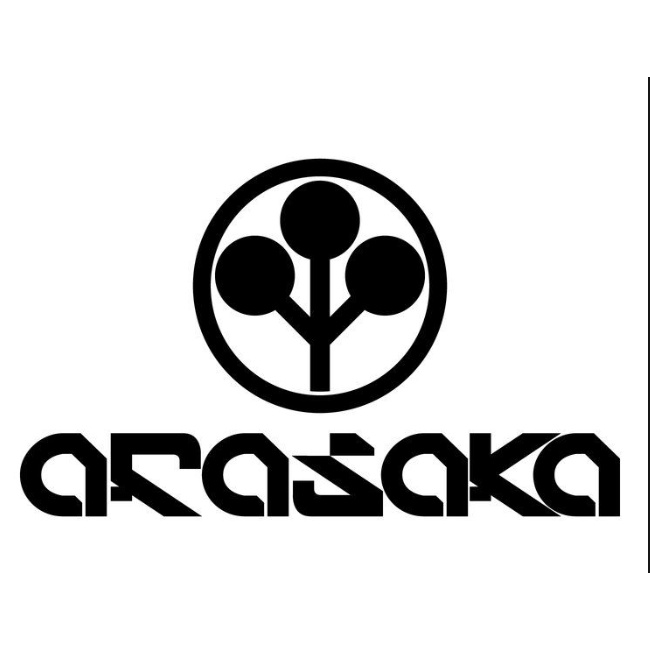
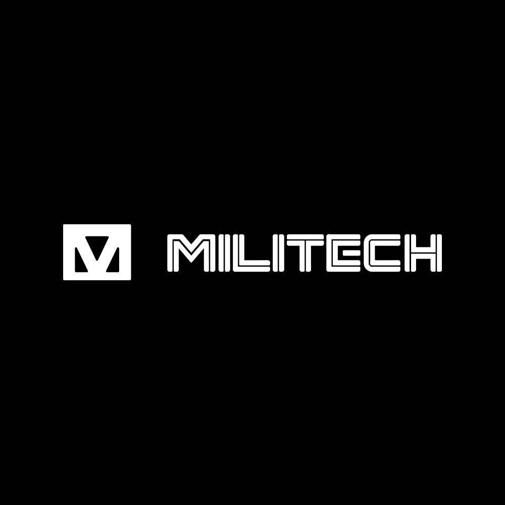
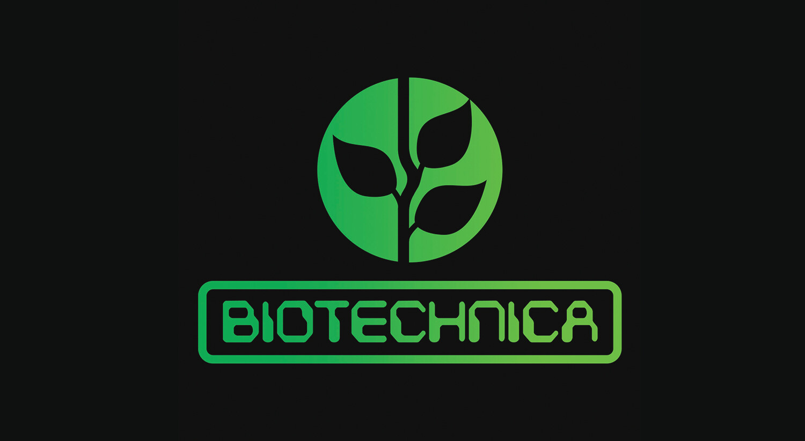
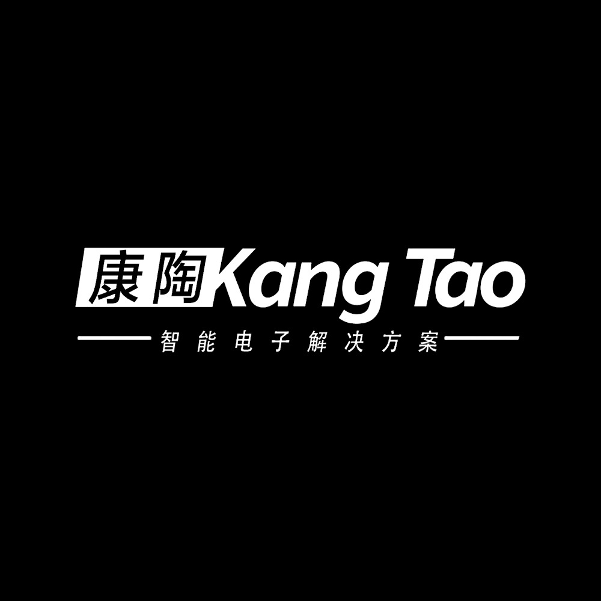
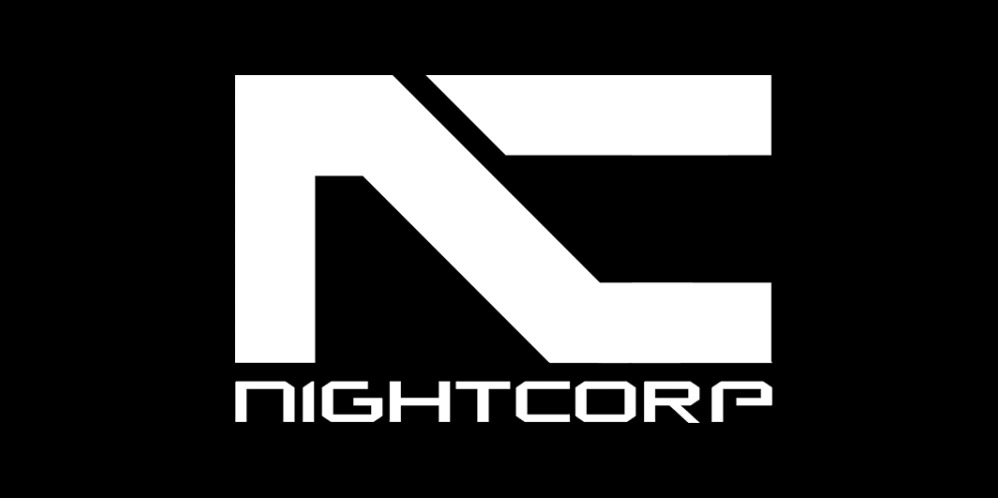
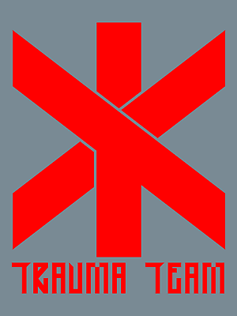
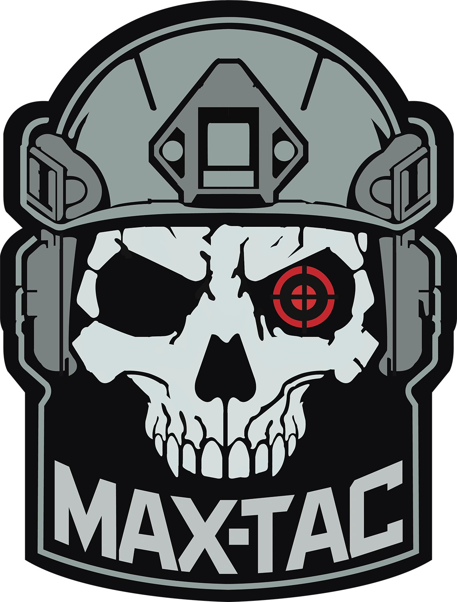

ARASAKA
A Arasaka é uma megacorporação fictícia do universo Cyberpunk, conhecida por seu enorme poder militar, financeiro e político. De origem japonesa, foi fundada por Saburo Arasaka e atua em segurança privada, armamentos e bancos. Extremamente autoritária e implacável, ela busca o controle global a qualquer custo.
MILITECH
A Militech é uma megacorporação americana do universo Cyberpunk, especializada em armamentos, tecnologia militar e serviços de segurança. Fortemente ligada ao governo dos EUA, é uma das maiores fornecedoras de armas e soldados mercenários do mundo. Competitiva e agressiva, rivaliza com a Arasaka pelo domínio global.
BIOTECH
A Biotechnica é uma corporação do universo Cyberpunk focada em biotecnologia, engenharia genética e agricultura avançada. De origem europeia, ficou famosa por criar o combustível sintético CHOOH2, que revolucionou o mercado energético. A empresa também atua no desenvolvimento de alimentos geneticamente modificados e implantes biotecnológicos.
KANG-TAO
A Kang Tao é uma megacorporação chinesa do universo Cyberpunk, especializada em armas inteligentes e tecnologia de controle cibernético. Relativamente nova no cenário corporativo, ela cresceu rapidamente graças à inovação em armamentos automatizados e sistemas de rastreamento.
NIGHT CORP
A Night Corp é uma corporação misteriosa e influente no universo de Cyberpunk, com sede em Night City. Oficialmente, ela se apresenta como uma organização dedicada ao bem-estar da cidade, financiando infraestrutura, segurança e projetos urbanos.
TRAUMA TEAM
A Trauma Team é uma corporação especializada em serviços médicos de emergência no universo de Cyberpunk. Operando como uma mistura de paramédicos e forças especiais, suas equipes são altamente treinadas, armadas e rápidas, respondendo apenas a clientes com contratos pagos – geralmente os mais ricos.
MAXTAC
A MaxTac, abreviação de Maximum Force Tactical Division, é uma unidade de elite da polícia de Night City no universo Cyberpunk. Também conhecida como Psycho Squad, ela é chamada apenas em casos extremos, principalmente para conter indivíduos que sofreram colapsos psicóticos causados por excesso de implantes cibernéticos — os chamados cyberpsychos.